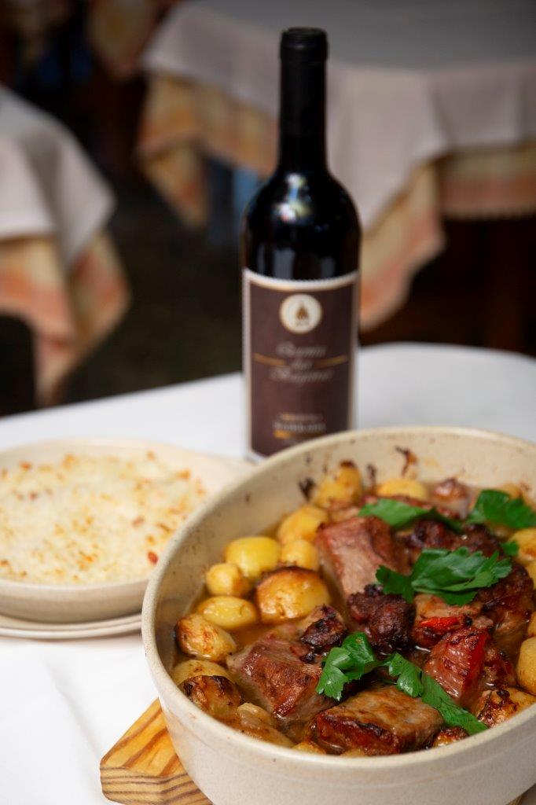

O Típico
Sabores de tradição
Descubra a essência da culinária portuguesa no Típico. Pratos autênticos, preparados com paixão, trazendo à mesa o verdadeiro gosto de Águeda. Com mais de 30 anos a servir memórias e tradições, cada visita é uma celebração do sabor.
O Típico
A Experiência Extraordinária
Bem-vindo ao Típico, um refúgio culinário onde a tradição portuguesa ganha vida em cada prato. Situado no coração de Águeda, oferecemos uma experiência gastronómica única, que combina sabores autênticos com uma hospitalidade acolhedora. Desfrute de pratos cuidadosamente preparados que refletem a riqueza da nossa herança culinária, num ambiente que celebra as raízes e a cultura portuguesa. No Típico, cada refeição é uma jornada de descoberta e prazer.

O nosso favorito
A nossa especialidade
Vitela assada com arroz no forno
14,50€
- Lombo
- Batatas
- Cebola
- Azeite
